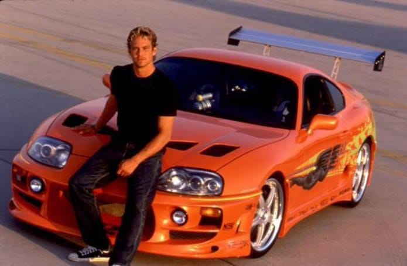

🔥 VELOZES E FURIOSOS (2001) 🔥
O começo da lenda nas ruas de Los Angeles
📽️ Sobre o Filme
Velozes e Furiosos (The Fast and the Furious) foi lançado em 2001 e deu início a uma das franquias mais explosivas da história do cinema. O filme mistura corridas ilegais, carros tunados, ação e muita adrenalina.
🚦 Personagens Principais
- Dominic Toretto (Vin Diesel) – O líder das corridas de rua
- Brian O'Conner (Paul Walker) – Policial infiltrado no mundo das corridas
- Mia Toretto (Jordana Brewster) – Irmã de Dom e paixão de Brian
- Letty (Michelle Rodriguez) – Parceira de Dom
🏁 Carros Icônicos


Entre os destaques estão o lendário Toyota Supra laranja de Brian e o Dodge Charger R/T 1970 de Dom.
🧠 Curiosidades
- 🎬 O filme foi inspirado em um artigo de revista chamado "Racer X".
- 🎵 A trilha sonora é um clássico dos anos 2000, com muito hip hop e eletrônico.
- 🚓 Vários carros usados foram realmente tunados especialmente para o filme.
"Eu não tenho medo de morrer. Tenho medo de não viver o suficiente." – Dom Toretto